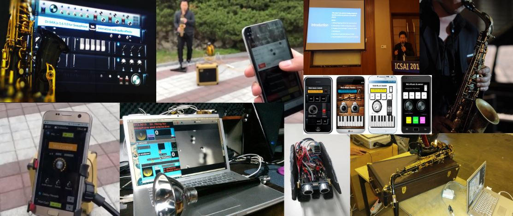
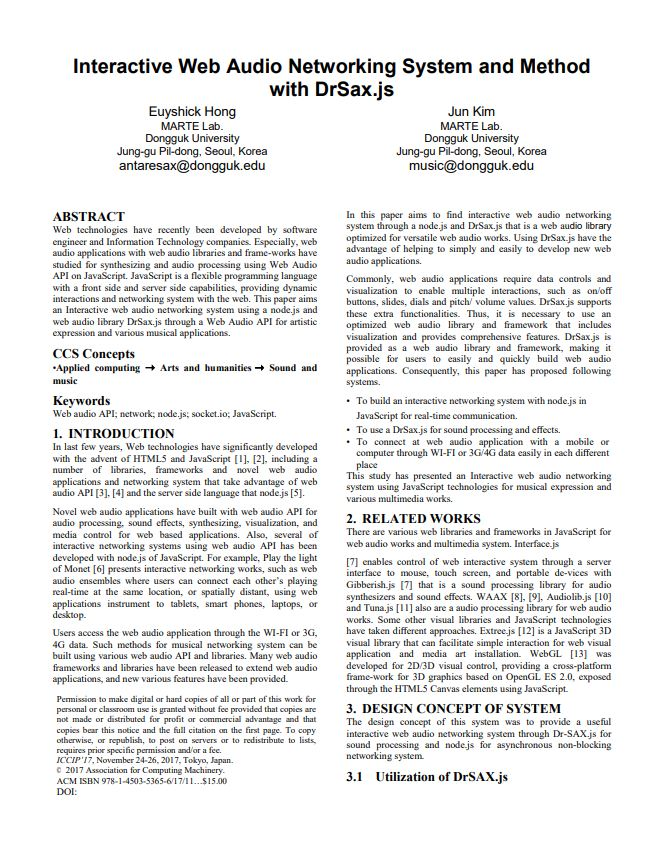
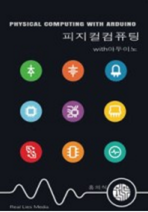

Dr.Euy Shick Hong
Welcome to the HomePage of DrHong's works

DrHong's
Official Home Page
Dr.Euy Shick Hong
Dr.Euy Shick Hong
Software Engineer
Dongguk University, Doctor in Multimedia
Yonsei University, Master in Computer Engineering
Plymouth University, UK, Visiting scholar invited
Yonsei University, Software Systems Design Consulting
& Mentoring
I am a Senior Software Engineer.
I studied with Prof Jun Kim at the Marte Lab, Dongguk
University with a doctoral dissertation entitled
"A study of Interactive Web Application through Web-based
Audio Library Development".
I have been working in an IT company as R&D lead in the IT
sector and developing research
into web-based music Technologies and AI at the Institute
for Computer Music and Technology.
I also was invited as a visiting scholar at Plymouth
University in the Uk and had a speech about "Music
Technology" at Carnegie Mellon University.
He also
mentors students at Yonsei University.
©2025 Euy Shick Hong
antaresax@gmail.com
홍의식 박사
홍의식 박사
시니어 소프트웨어 엔지니어로서, 동국대학교 마르테(Marte)
연구실에서 김준 교수의 지도아래
「웹 기반 오디오
라이브러리 개발을 통한 인터랙티브 웹 애플리케이션 연구」를
주제로 박사 학위를 취득하였다.
현재 IT 기업에서 R&D 리더로서 웹 기술 연구를 이끌고
있으며,
컴퓨터 음악 및 기술 연구소(Institute for Computer Music
and Technology) 에서도 관련 연구를 이어가고 있다.
또한 영국 플리머스대학교에 방문 연구원으로 초청되었으며,
카네기 멜론 대학교에서는 “Music Technology” 를 주제로
강연을 진행하였다.
현재 그는 연세대학교에서 멘토링 활동을 통해 차세대
연구자와 개발자 양성에도 기여하고 있다.
©2025 Euy Shick Hong
antaresax@gmail.com
My works
Papers
-
 Doctoral thesis :
Doctoral thesis :
"A study of Interactive Web Application through Web-based Audio Library Development" -

Euy shick Hong, Jun Kim, the 3rd International Conference on Communication and Information 2017 Tokyo uni. (SCOPUS)
Books

"physical computing with arduino"ISBN: 978-8998-988-029, Realise media.
Contact
antaresax@gmail.com